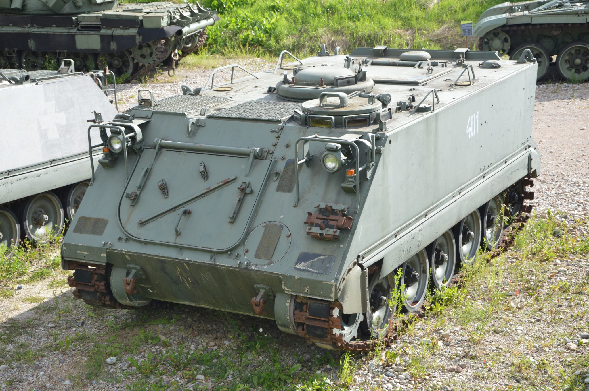

Naudojama šarvuota technika Lietuvoje
Lietuvos kariuomenės šarvuočiai atlieka svarbų vaidmenį tiek gynyboje, tiek tarptautinėse operacijose. Šių transporto priemonių paskirtis apsaugoti karius, suteikti ugnies galią ir užtikrinti judėjimą įvairiose situacijose.
Vilkas (Boxer)

Galingiausias ir moderniausias Lietuvos kariuomenės šarvuočių modelis. „Vilkas“ turi 30 mm patranką, modernias stebėjimo sistemas ir storą šarvą. Jis suteikia didelę ugnies galią ir puikų mobilumą tiek miestuose, tiek atvirose teritorijose.
M113
M113 lengvasis amerikietiškas šarvuotis, naudojamas mokymams, karių transportavimui ir paramai. Nors tai senesnis modelis, jis išlieka patikimas ir lengvai prižiūrimas.